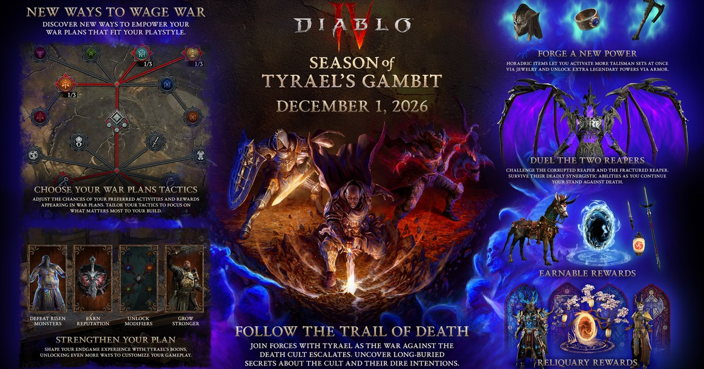

Diablo 4's Season of Tyrael's Gambit starts December 1 — two Reapers, a War Plans overhaul, and last season's best stuff going permanent
Blizzard revealed Diablo 4's Season 16 on November 24: the Season of Tyrael's Gambit launches December 1 at 9:30 a.m. PT, with a Dual Reaper lair boss, a new War Plans Tactics system, Horadric Items for Talisman sets, and much of Hell's Legacy going permanent.

Blizzard laid out Diablo 4's sixteenth season on November 24, and it's a big one. The Season of Tyrael's Gambit starts December 1 at 9:30 a.m. PT as a free update, and it centers on a war against the Úllo Sar death cult — with Tyrael himself fighting alongside you.
The headline fight is a pair of Reapers. The Corrupted Reaper, who terrorized Sanctuary in the Season of Death Awakening, is back — and this time she brings the Fractured Reaper with her. The two merge their abilities into one synergized threat, and after you beat them in the seasonal questline you can fight them together as a Lair Boss pair in Zarbinzet, a farmable source of Mythic Uniques on the highest Torment levels.
War Plans get a real overhaul
Season 16 reworks how War Plans work, with two new trees. War Plans Tactics is a meta-progression system that lets you tilt the odds toward the activities and rewards you actually want: earn points from War Plans activities, invest up to three points into a node, and the chance of your preferred activity or reward appearing climbs by 200, 400, or 600 percent. The system carries beyond Season 16, but it requires the Lord of Hatred expansion — and respecs run on a new currency, Marks of Wisdom, earned from War Plans and capped at 20.
Tyrael's Boons is the seasonal tree, and it doesn't need the expansion. It has four paths — Curious Addition, Merchant of Mystery, Scent of Gold, and Trash for Treasure — with up to four of six nodes selectable in each, tuning everything from Purveyor of Curiosities gambling odds to a new merchant selling caches for Forgotten Souls. Respeccing a point here costs 5,000,000 gold.
Horadric Items and Helltides
A new Legendary type arrives with the season: Horadric Items, courtesy of the Úllo Sar. Their affixes modify a specific Talisman set — jewelry with a Horadric affix counts as an extra piece of that set, so a single equipped charm unlocks the two-piece bonus, while armor and weapons add new effects once you have a two-set bonus active. The idea is more set bonuses at once, with fewer charms committed.
Helltides get the quality-of-life fix players have wanted: one Helltide will always be active in the original zones, with a second running in Nahantu or Skovos on a 30-minute offset. Aberrant Cinders no longer vanish when a Helltide ends — instead there's a cap of 5,000 on how many you can carry.
Hell's Legacy goes (mostly) permanent
The other big news is what stays. Blizzard said it heard the requests to keep Season of Hell's Legacy's features, and much of it becomes permanent with the season's launch: the Prime Evil Council becomes a permanent Lair Boss in Uber Tristram, Capstone Dungeons open in Torment 10 and up, the World Boss Diablo summon stays, and Legacy Uniques, the Annihilus Seal, and the Hellfire Torch Charm remain in the game. Deckard Cain's books get a permanent home on a pedestal in Tristram, and Cow Island — yes, Cow Island — keeps its waypoint for anyone who already opened it.
Seasonal ranks pay out up to 11 Skill Points, 42 Paragon Points, 13 Resplendent Sparks, and 5 Mythic Unique Journey Caches across nine ranks, plus the Standard of Justice Mount Trophy and a Stamper stag pet. The free Battle Pass reliquary includes the Doorway of the Kami Portal and a Ki-Rin mount; the Deluxe Battle Pass runs 2,800 Platinum.
Patch 3.3.0 is available to pre-download November 30 at 10 a.m. PT on Battle.net, Xbox, and PlayStation. Twitch Drops run alongside the launch: watch two hours of eligible Diablo 4 streams from launch through December 15 to earn the Jagged Impaler two-handed polearm cosmetic.
Sources: Advance the War Against Death in Season of Tyrael's Gambit (Blizzard) · Diablo 4 Officially Gets a Big Live-Service Change (Polygon) · Diablo 4's Most Nostalgic Season Is Becoming (Mostly) Permanent (GameSpot) · Diablo 4 Season 16: Season of Tyrael's Gambit officially kicks off on December 1 (IGN)
Gear up: Razer — mice, keyboards, headsets and laptops.